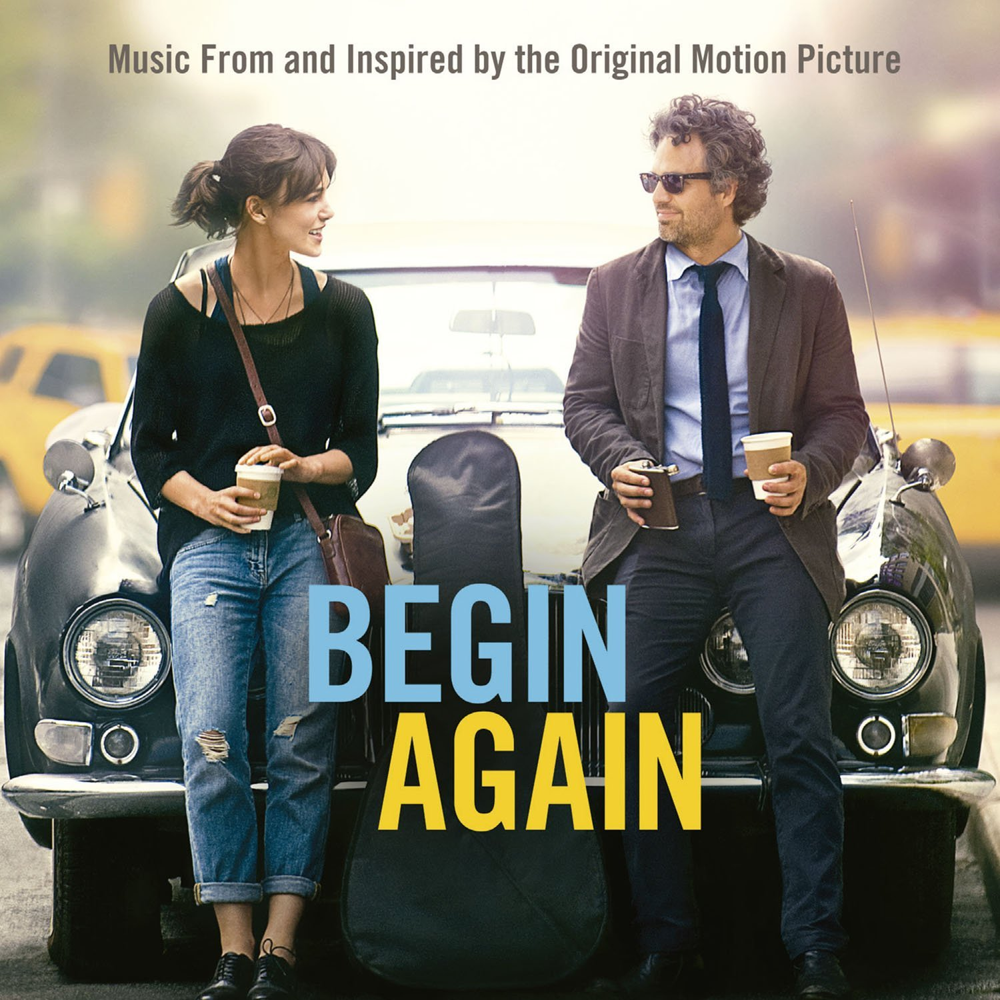

soundtrack
The Begin Again soundtrack was released on June 30, 2014. The album was released by Gregg Alexander's record label ALXNDR, Adam Levine's label 222 Records, Polydor Records, and Interscope Records. After writing the screeenplay, John Carney enlisted the help of Gregg Alexander with Danielle Brisebois, Nick Lashley, Rick Nowels, and Nick Southwood to compose the film's music, an integral part of the film's development. Other songs were written and composed by Glen Hansard and John Carney. Most songs on the soundtrack were performed by Keira Knightley and Adam Levine. Levine's song "Lost Stars" was nominated for multiple awards including a 2015 Academy Award for Best Original Song.
tracklist
- "Lost Stars"
by Adam Levine - "Tell Me If You Wanna Go Home"
by Keira Knightley - "No One Else Like You"
by Adam Levine - "Horny"
by CeeLo Green
- "Lost Stars"
by Keira Knightley - "A Higher Place"
by Adam Levine - "Like A Fool"
by Keira Knightley - "Did It Ever Cross Your Mind (Demo Version)"
by Cessyl Orchestra
- "Women Of The World"
by CeeLo Green - "Coming Up Roses"
by Keira Knightley - "Into The Trance"
by Cessyl Orchestra - "A Step You Can't Take Back"
by Keira Knightley
- Lost Stars (ItN Mix)
by Adam Levine - The Roof Is Broke
by Cessyl Orchestra - Tell Me If You Wanna Go Home (Rooftop Mix)
by Keira Knightley -
Intimidated By You
by Cessyl Orchestra

lost stars
adam levine
tell me if
you wanna
go home
keira knightley
lost stars
keira knightley
like a fool
keira knightley